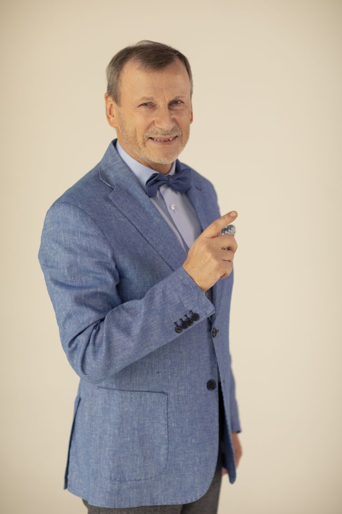

Сергій Радлінський
Системне відновлення зубів, розрахунок форми за Золотим коефіцієнтом і техніка прямої реставрації композитом — школа, що складалася в клініці-студії «Аполлонія» понад сорок років.
Кожна стаття в цій добірці — покроковий клінічний випадок із власної практики автора: від діагностики й розрахунку до віддалених результатів, які він показує через три, дев'ять, тринадцять і навіть двадцять три роки після втручання. Матеріали друкувалися в журналі «ДентАрт» і зібрані тут у порядку від засадничих принципів до окремих клінічних задач.
- Заслужений лікар України (1994)
- Почесний професор УМСА (2010)
- Співзасновник і президент Української академії естетичної стоматології
- Регент 15 дистрикту Міжнародного коледжу стоматологів (ICD)
- Афілійований член Європейської академії естетичної стоматології
- Засновник і видавець журналу «ДентАрт»
Системне відновлення зубів
4 статтіЗасадничі роботи: як відновити втрачену анатомічну форму за просторовими орієнтирами самого зуба, як об'єктивно перевірити оклюзію після відновлення і як через роки оновити раніше зроблені реставрації, не руйнуючи досягнутого.

Просторові орієнтири в системній реставрації зубів
Пошук втраченої анатомічної форми за локальними орієнтирами — шийкою зуба і дентино-емалевим з'єднанням. Системна заміна тотальних композитних реставрацій, результати до 3 років, порівняння з восковим моделюванням за Славічеком.
Сергій Радлінський «ДентАрт» 2022 №4
Синхроміографія у системному відновленні оклюзії
Порівняльна поверхнева електроміографія жувальних м'язів (Teethan) як об'єктивний метод оцінки балансу оклюзії до і після системного відновлення зубів при патологічному стиранні. Контроль через місяць і через рік.
Сергій Радлінський «ДентАрт» 2018 №2
Системна реновація реставрованих зубів. Верхні зуби
Клінічний приклад із 13-річною історією: зміна парадигми Блека на парадигму адгезивної реставрації, шість кроків системного відновлення, показання до реновації та трикрокова реновація верхніх зубів.
Сергій Радлінський «ДентАрт» 2019 №2
Системна реновація реставрованих зубів. Нижні зуби
Друга частина: трикрокова реновація всіх нижніх реставрованих зубів, пряме відновлення зуба 37 на індивідуальному абатменті та стан зубів і прикусу через 3 роки після реновації.
Сергій Радлінський «ДентАрт» 2019 №3Золотий коефіцієнт: розрахунок форми
3 статтіАвторський підхід до пропорцій фронтальної ділянки: форма зуба не вгадується, а обчислюється — і вже з розрахунку виростає реставрація.

Реконструкція верхніх різців за Золотим коефіцієнтом
Покроковий клінічний випадок реконструкції верхніх різців за авторським коефіцієнтом пропорційності 1,3 — від розрахунку фронтального секстанта до системного відновлення оклюзії при підвищеній стертості зубів.
Сергій Радлінський, Анна Бодаква «ДентАрт» 2025 №3
Реконструкція нижніх різців за Золотим коефіцієнтом
Протокол реконструкції нижніх різців за коефіцієнтом пропорційності 1,1: розрахунок фронтального секстанта, закриття трем після пародонтиту і системне відновлення оклюзії в прямій реставрації композитом.
Сергій Радлінський «ДентАрт» 2025 №4
Реставрація за розрахунком: верхні латеральні різці
Реконструкція верхніх латеральних різців аномальної форми за розрахунком фронтальної ділянки з використанням золотих коефіцієнтів. Покроковий випадок прямої реставрації з віддаленими результатами до 9 років.
Сергій Радлінський «ДентАрт» 2022 №3Складні клінічні задачі
3 статтіСитуації, де звичний протокол не працює: дефект під яснами, поздовжній розкол зуба, потемнілий девітальний зуб — і прийоми, які дають змогу зберегти власні тканини.

Реставрація зубів з під’ясенним дефектом
Ізоляція під'ясенного дефекту жорсткою металевою матрицею і двома клинами. Класифікація Венезіані, біомеханіка силових поясів і три клінічні приклади — зуби 12, 15 і 46.
Сергій Радлінський «ДентАрт» 2022 №2
Відновлення зуба з поздовжнім розколом
Склеювання девітального моляра з поздовжнім розколом: три силові пояси, репозиція та іммобілізація фрагментів, армування скловолокном Dentapreg, 8-річне спостереження і реновація через 10 років.
Сергій Радлінський «ДентАрт» 2020 №3
Дисколорит девітального зуба: резекція дентину
Резекція профарбованого дентину як спосіб усунути дисколорит зі збереженням природної емалі. Клінічна техніка з сорокарічного досвіду автора, два випадки зі спостереженням до 23 років.
Сергій Радлінський «ДентАрт» 2025 №2Рецензія
погляд на чужу роботу
«Стирання зубів» Дідьє Дічі — дружній погляд на істину
Рецензія на монографію Дідьє Дічі, Карла Массімо Саратті й Сержа Ерпе «Tooth Wear» (Quintessence, 2023): діагностика й прогнозування стирання зубів, превентивна, інтерцептивна та реставраційна стратегії, прямі й непрямі техніки, CAD/CAM і довговічність реставрацій.
Сергій Радлінський «ДентАрт» 2023 №4Далі — увесь архів «ДентАрту»
Понад три сотні статей номерів журналу онлайн: естетика прямої та непрямої реставрації, ендодонтія, дитяча стоматологія, матеріалознавство, організація практики та інтерв'ю з визначними стоматологами.